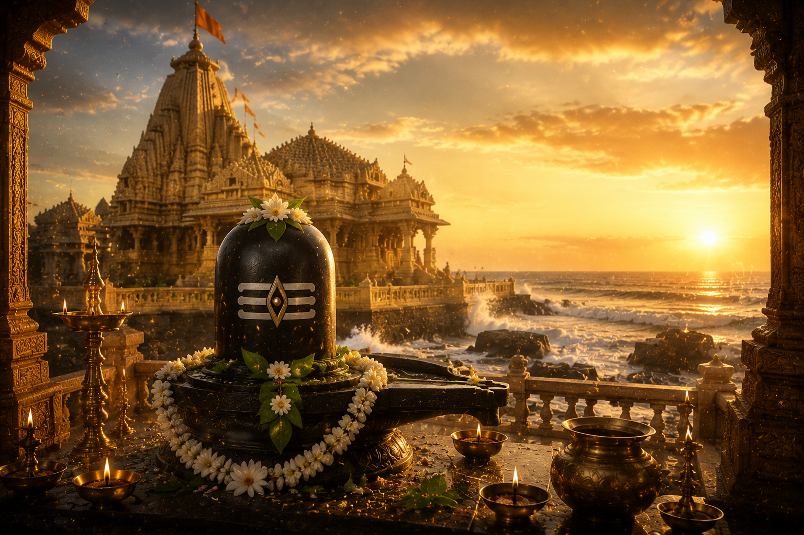

అరేబియా సముద్ర తీరాన గుజరాత్ రాష్ట్రంలోని ప్రభాస్ పటణంలో వెలసిన శ్రీ సోమనాథ జ్యోతిర్లింగ దేవాలయం ద్వాదశ జ్యోతిర్లింగాలలో మొదటిదిగా అత్యంత పూజనీయమైన శైవక్షేత్రం. అనాదికాలం నుండి భక్తుల ఆరాధనను పొందుతున్న ఈ క్షేత్రాన్ని **"శాశ్వత విశ్వాసానికి ప్రతీక"**గా భావిస్తారు.
సోమనాథ క్షేత్రం కేవలం ఒక దేవాలయం మాత్రమే కాదు; భారతీయ సంస్కృతి, ఆధ్యాత్మికత, ధర్మరక్షణ మరియు చరిత్రకు చిరస్మరణీయమైన చిహ్నం. ఎన్నో దండయాత్రలు, విధ్వంసాలు ఎదురైనా తిరిగి తిరిగి పునర్నిర్మించబడిన ఈ ఆలయం భారతదేశ ఆత్మస్థైర్యానికి నిదర్శనంగా నిలిచింది.
శ్రీ సోమనాథ జ్యోతిర్లింగ దేవాలయం
భారతీయ సనాతన ధర్మ పుణ్యక్షేత్రం

౧. పరిచయం
౨. క్షేత్ర మహిమ
శైవ ఆగమాలు, పురాణాలు మరియు జ్యోతిర్లింగ మహాత్మ్యాలలో సోమనాథాన్ని అత్యంత పవిత్రమైన క్షేత్రంగా వర్ణించారు.
"సోమనాథం చ సోమేశం" అని పురాణాలలో ఈ క్షేత్ర మహిమను ప్రశంసించారు.
ఈ జ్యోతిర్లింగాన్ని దర్శించిన వారికి పాపక్షయం, మానసిక ప్రశాంతత, ఆరోగ్యం, ఐశ్వర్యం మరియు శివానుగ్రహం లభిస్తాయని విశ్వాసం.
"సోమనాథం చ సోమేశం" అని పురాణాలలో ఈ క్షేత్ర మహిమను ప్రశంసించారు.
ఈ జ్యోతిర్లింగాన్ని దర్శించిన వారికి పాపక్షయం, మానసిక ప్రశాంతత, ఆరోగ్యం, ఐశ్వర్యం మరియు శివానుగ్రహం లభిస్తాయని విశ్వాసం.
౩. సోమనాథ జ్యోతిర్లింగ ఆవిర్భావం – పురాణ నేపథ్యం
ప్రజాపతి దక్షునికి ఇరవై ఏడు కుమార్తెలు ఉండేవారు. వారందరినీ చంద్రుడు వివాహం చేసుకున్నాడు. అయితే వారిలో రోహిణిని మాత్రమే ఎక్కువగా ప్రేమించి మిగిలిన భార్యలను నిర్లక్ష్యం చేశాడు.
దీనితో కోపించిన దక్షుడు చంద్రుడిని క్షయవ్యాధి బారిన పడాలని శపించాడు. శాప ప్రభావంతో చంద్రుడు తన కాంతిని కోల్పోయి బలహీనుడయ్యాడు. దేవతలు మరియు ఋషుల సూచనతో చంద్రుడు ప్రభాస్ క్షేత్రానికి వచ్చి పరమశివుని గురించి ఘోర తపస్సు చేశాడు.
చంద్రుని భక్తికి ప్రసన్నుడైన పరమశివుడు ప్రత్యక్షమై శాపాన్ని పూర్తిగా తొలగించకుండా, ప్రతి నెలలో ఒక పక్షం క్షీణించి మరొక పక్షం వృద్ధి చెందే వరాన్ని ప్రసాదించాడు. ఈ విధంగానే చంద్రునికి కృష్ణపక్షం, శుక్లపక్షం ఏర్పడ్డాయని పురాణాలు పేర్కొంటాయి.
చంద్రుడు పరమశివుని కృతజ్ఞతగా ఈ ప్రాంతంలో స్వర్ణమయమైన ఆలయాన్ని నిర్మించి జ్యోతిర్లింగాన్ని ప్రతిష్ఠించాడు. చంద్రుడిని "సోముడు" అని కూడా పిలుస్తారు. అందువల్ల ఈ క్షేత్రానికి "సోమనాథం" అనే పేరు వచ్చింది.
దీనితో కోపించిన దక్షుడు చంద్రుడిని క్షయవ్యాధి బారిన పడాలని శపించాడు. శాప ప్రభావంతో చంద్రుడు తన కాంతిని కోల్పోయి బలహీనుడయ్యాడు. దేవతలు మరియు ఋషుల సూచనతో చంద్రుడు ప్రభాస్ క్షేత్రానికి వచ్చి పరమశివుని గురించి ఘోర తపస్సు చేశాడు.
చంద్రుని భక్తికి ప్రసన్నుడైన పరమశివుడు ప్రత్యక్షమై శాపాన్ని పూర్తిగా తొలగించకుండా, ప్రతి నెలలో ఒక పక్షం క్షీణించి మరొక పక్షం వృద్ధి చెందే వరాన్ని ప్రసాదించాడు. ఈ విధంగానే చంద్రునికి కృష్ణపక్షం, శుక్లపక్షం ఏర్పడ్డాయని పురాణాలు పేర్కొంటాయి.
చంద్రుడు పరమశివుని కృతజ్ఞతగా ఈ ప్రాంతంలో స్వర్ణమయమైన ఆలయాన్ని నిర్మించి జ్యోతిర్లింగాన్ని ప్రతిష్ఠించాడు. చంద్రుడిని "సోముడు" అని కూడా పిలుస్తారు. అందువల్ల ఈ క్షేత్రానికి "సోమనాథం" అనే పేరు వచ్చింది.
౪. ఆలయ చరిత్ర
సోమనాథ క్షేత్రం వేల సంవత్సరాల చరిత్రను కలిగి ఉంది. స్కాంద పురాణం, శివ పురాణం, భాగవత పురాణం మరియు మహాభారతంలో ఈ క్షేత్ర ప్రస్తావన కనిపిస్తుంది.
చరిత్రలో ఈ ఆలయం అనేకసార్లు విదేశీ దండయాత్రలకు గురై ధ్వంసమైంది. అయినప్పటికీ భారతీయ రాజులు, భక్తులు మరియు ప్రజల సహకారంతో ప్రతిసారి పునర్నిర్మించబడింది.
భారతదేశానికి స్వాతంత్ర్యం వచ్చిన తరువాత సర్దార్ వల్లభభాయి పటేల్ ప్రేరణతో సోమనాథ దేవాలయ పునర్నిర్మాణం ప్రారంభమైంది. భారత తొలి రాష్ట్రపతి డాక్టర్ రాజేంద్ర ప్రసాద్ సన్నిధిలో పునఃప్రతిష్ఠ మహోత్సవం జరిగింది.
చరిత్రలో ఈ ఆలయం అనేకసార్లు విదేశీ దండయాత్రలకు గురై ధ్వంసమైంది. అయినప్పటికీ భారతీయ రాజులు, భక్తులు మరియు ప్రజల సహకారంతో ప్రతిసారి పునర్నిర్మించబడింది.
భారతదేశానికి స్వాతంత్ర్యం వచ్చిన తరువాత సర్దార్ వల్లభభాయి పటేల్ ప్రేరణతో సోమనాథ దేవాలయ పునర్నిర్మాణం ప్రారంభమైంది. భారత తొలి రాష్ట్రపతి డాక్టర్ రాజేంద్ర ప్రసాద్ సన్నిధిలో పునఃప్రతిష్ఠ మహోత్సవం జరిగింది.
౫. ఆలయ నిర్మాణానికి సేవ చేసిన రాజులు
చంద్రదేవుడు
పురాణాల ప్రకారం మొదటి ఆలయాన్ని బంగారంతో నిర్మించినవాడు చంద్రుడు.
రావణుడు
పురాణ సంప్రదాయం ప్రకారం రావణుడు వెండితో ఆలయాన్ని పునర్నిర్మించినట్లు చెప్పబడింది.
శ్రీకృష్ణుడు
కొన్ని పురాణ సంప్రదాయాల ప్రకారం ద్వాపరయుగంలో శ్రీకృష్ణుడు గంధపు చెక్కతో ఆలయాన్ని నిర్మించాడని విశ్వసిస్తారు.
భీమదేవుడు
చాళుక్య రాజు భీమదేవుడు ఆలయ పునర్నిర్మాణానికి విశేష కృషి చేశాడు.
సర్దార్ వల్లభభాయి పటేల్
స్వాతంత్ర్యానంతరం సోమనాథ ఆలయ పునర్నిర్మాణానికి శ్రీకారం చుట్టి నేటి ఆలయ నిర్మాణానికి ప్రధాన కారణమయ్యాడు.
పురాణాల ప్రకారం మొదటి ఆలయాన్ని బంగారంతో నిర్మించినవాడు చంద్రుడు.
రావణుడు
పురాణ సంప్రదాయం ప్రకారం రావణుడు వెండితో ఆలయాన్ని పునర్నిర్మించినట్లు చెప్పబడింది.
శ్రీకృష్ణుడు
కొన్ని పురాణ సంప్రదాయాల ప్రకారం ద్వాపరయుగంలో శ్రీకృష్ణుడు గంధపు చెక్కతో ఆలయాన్ని నిర్మించాడని విశ్వసిస్తారు.
భీమదేవుడు
చాళుక్య రాజు భీమదేవుడు ఆలయ పునర్నిర్మాణానికి విశేష కృషి చేశాడు.
సర్దార్ వల్లభభాయి పటేల్
స్వాతంత్ర్యానంతరం సోమనాథ ఆలయ పునర్నిర్మాణానికి శ్రీకారం చుట్టి నేటి ఆలయ నిర్మాణానికి ప్రధాన కారణమయ్యాడు.
౬. ఆలయ నిర్మాణ విశేషాలు
ఆలయం చాళుక్య శిల్పకళా శైలిలో నిర్మించబడింది.
ప్రధాన గోపురం సుమారు నూట యాభై అడుగుల ఎత్తులో ఉంటుంది.
గర్భగుడిలో స్వయంభూ జ్యోతిర్లింగ స్వరూపంగా పరమశివుడు కొలువై ఉన్నాడు.
ఆలయ సముద్రాభిముఖ దిశలో ఉన్న బాణస్తంభం ప్రత్యేక ఆకర్షణ.
బాణస్తంభంపై ఈ బిందువు నుండి దక్షిణ ధృవం వరకు మధ్యలో భూమి లేదని సూచించే శాసనం ఉంది.
అరేబియా సముద్ర తీరాన ఉండటం వల్ల సూర్యాస్తమయ సమయంలో ఆలయ సౌందర్యం అపూర్వంగా ఉంటుంది.
ప్రధాన గోపురం సుమారు నూట యాభై అడుగుల ఎత్తులో ఉంటుంది.
గర్భగుడిలో స్వయంభూ జ్యోతిర్లింగ స్వరూపంగా పరమశివుడు కొలువై ఉన్నాడు.
ఆలయ సముద్రాభిముఖ దిశలో ఉన్న బాణస్తంభం ప్రత్యేక ఆకర్షణ.
బాణస్తంభంపై ఈ బిందువు నుండి దక్షిణ ధృవం వరకు మధ్యలో భూమి లేదని సూచించే శాసనం ఉంది.
అరేబియా సముద్ర తీరాన ఉండటం వల్ల సూర్యాస్తమయ సమయంలో ఆలయ సౌందర్యం అపూర్వంగా ఉంటుంది.
[object Object]
సోమనాథ జ్యోతిర్లింగం
ద్వాదశ జ్యోతిర్లింగాలలో మొదటిగా పూజించబడే పవిత్ర లింగం.
త్రివేణి సంగమం
హిరణ్, కపిలా మరియు సరస్వతి నదుల సంగమంగా భావించబడే పవిత్ర తీర్థం.
భాల్కా తీర్థం
శ్రీకృష్ణుడు తన అవతారాన్ని ముగించిన పవిత్ర ప్రదేశంగా ప్రసిద్ధి.
గీతా మందిరం
భగవద్గీత సందేశాలను ప్రతిబింబించే అందమైన దేవాలయం.
ద్వాదశ జ్యోతిర్లింగాలలో మొదటిగా పూజించబడే పవిత్ర లింగం.
త్రివేణి సంగమం
హిరణ్, కపిలా మరియు సరస్వతి నదుల సంగమంగా భావించబడే పవిత్ర తీర్థం.
భాల్కా తీర్థం
శ్రీకృష్ణుడు తన అవతారాన్ని ముగించిన పవిత్ర ప్రదేశంగా ప్రసిద్ధి.
గీతా మందిరం
భగవద్గీత సందేశాలను ప్రతిబింబించే అందమైన దేవాలయం.
౮. నిత్య సేవలు
మంగళ హారతి
మహాభిషేకం
రుద్రాభిషేకం
బిల్వార్చన
లఘు రుద్ర పూజ
మహా రుద్ర పూజ
సాయంకాల హారతి
శయన హారతి
మహాభిషేకం
రుద్రాభిషేకం
బిల్వార్చన
లఘు రుద్ర పూజ
మహా రుద్ర పూజ
సాయంకాల హారతి
శయన హారతి
౯. ప్రధాన ఉత్సవాలు
మహా శివరాత్రి
శ్రావణ మాస ఉత్సవాలు
కార్తీక పౌర్ణమి
సోమవార ప్రత్యేక పూజలు
ప్రదోష మహోత్సవాలు
దీపోత్సవం
శ్రావణ మాస ఉత్సవాలు
కార్తీక పౌర్ణమి
సోమవార ప్రత్యేక పూజలు
ప్రదోష మహోత్సవాలు
దీపోత్సవం
౧౦. నేటి సోమనాథం
నేడు సోమనాథం భారతదేశంలోని అత్యంత ప్రసిద్ధ శైవ పుణ్యక్షేత్రాలలో ఒకటి. ప్రతి సంవత్సరం లక్షలాది మంది భక్తులు ఇక్కడికి విచ్చేసి జ్యోతిర్లింగాన్ని దర్శించుకుంటారు.
దేవస్థానం ఆధ్వర్యంలో దర్శనం, పూజలు, యాత్రికుల వసతి, ఆధ్యాత్మిక కార్యక్రమాలు మరియు సాంస్కృతిక కార్యక్రమాలు సమర్థవంతంగా నిర్వహించబడుతున్నాయి.
దేవస్థానం ఆధ్వర్యంలో దర్శనం, పూజలు, యాత్రికుల వసతి, ఆధ్యాత్మిక కార్యక్రమాలు మరియు సాంస్కృతిక కార్యక్రమాలు సమర్థవంతంగా నిర్వహించబడుతున్నాయి.
౧౧. యాత్రికులకు సమాచారం
స్థానం
ప్రభాస్ పటణం, గిర్ సోమనాథ జిల్లా, గుజరాత్.
చేరుకునే మార్గాలు
రైలుమార్గం: వేరావల్ రైల్వే స్టేషన్ సమీపంలో ఉంది.
విమాన మార్గం: దియూ విమానాశ్రయం మరియు రాజ్కోట్ విమానాశ్రయం నుండి చేరుకోవచ్చు.
రోడ్డు మార్గం: గుజరాత్ రాష్ట్రంలోని ప్రధాన నగరాల నుండి సౌకర్యవంతమైన రవాణా అందుబాటులో ఉంది.
ప్రభాస్ పటణం, గిర్ సోమనాథ జిల్లా, గుజరాత్.
చేరుకునే మార్గాలు
రైలుమార్గం: వేరావల్ రైల్వే స్టేషన్ సమీపంలో ఉంది.
విమాన మార్గం: దియూ విమానాశ్రయం మరియు రాజ్కోట్ విమానాశ్రయం నుండి చేరుకోవచ్చు.
రోడ్డు మార్గం: గుజరాత్ రాష్ట్రంలోని ప్రధాన నగరాల నుండి సౌకర్యవంతమైన రవాణా అందుబాటులో ఉంది.
౧౨. దర్శనం మరియు సేవల నమోదు
అధికారిక వెబ్సైట్
https://somnath.org
అందుబాటులో ఉన్న సేవలు
దర్శనానికి సంబంధించిన సమాచారం
పూజల నమోదు
వసతి వివరాలు
దాన సేవలు
ఉత్సవాల సమాచారం
యాత్రికుల మార్గదర్శకాలు
https://somnath.org
అందుబాటులో ఉన్న సేవలు
దర్శనానికి సంబంధించిన సమాచారం
పూజల నమోదు
వసతి వివరాలు
దాన సేవలు
ఉత్సవాల సమాచారం
యాత్రికుల మార్గదర్శకాలు
౧౩. ఆసక్తికర విషయాలు
సోమనాథం ద్వాదశ జ్యోతిర్లింగాలలో మొదటిదిగా పరిగణించబడుతుంది.
చరిత్రలో అనేకసార్లు ధ్వంసమైనప్పటికీ ప్రతిసారి పునర్నిర్మించబడిన అరుదైన ఆలయం.
చంద్రుడు తపస్సు చేసిన ప్రదేశంగా ఈ క్షేత్రం ప్రసిద్ధి.
బాణస్తంభం భారతీయ ఖగోళ విజ్ఞానానికి అద్భుత నిదర్శనంగా భావించబడుతుంది.
శ్రీకృష్ణుని అవతార సమాప్తికి సంబంధించిన ప్రభాస్ క్షేత్రం ఈ ఆలయానికి సమీపంలోనే ఉంది.
ప్రతి సాయంత్రం నిర్వహించే ధ్వని-వెలుగు ప్రదర్శన ద్వారా ఆలయ చరిత్రను ఆవిష్కరిస్తారు.
చరిత్రలో అనేకసార్లు ధ్వంసమైనప్పటికీ ప్రతిసారి పునర్నిర్మించబడిన అరుదైన ఆలయం.
చంద్రుడు తపస్సు చేసిన ప్రదేశంగా ఈ క్షేత్రం ప్రసిద్ధి.
బాణస్తంభం భారతీయ ఖగోళ విజ్ఞానానికి అద్భుత నిదర్శనంగా భావించబడుతుంది.
శ్రీకృష్ణుని అవతార సమాప్తికి సంబంధించిన ప్రభాస్ క్షేత్రం ఈ ఆలయానికి సమీపంలోనే ఉంది.
ప్రతి సాయంత్రం నిర్వహించే ధ్వని-వెలుగు ప్రదర్శన ద్వారా ఆలయ చరిత్రను ఆవిష్కరిస్తారు.
౧౪. ఆధారాలు
గ్రంథ ఆధారాలు
శివ పురాణం – కోటి రుద్ర సంహిత
స్కాంద పురాణం – ప్రభాస ఖండం
శ్రీమద్భాగవత మహాపురాణం
మహాభారతం – మౌసల పర్వం
లింగ పురాణం
శాసన మరియు చారిత్రక ఆధారాలు
సోమనాథ దేవస్థాన శాసనాలు
భారత పురావస్తు పరిశోధనల ఆధారాలు
చాళుక్య మరియు ఇతర రాజవంశాల చారిత్రక ఆధారాలు
అధికారిక ఆధారాలు
సోమనాథ దేవస్థాన ప్రచురణలు
సోమనాథ ట్రస్ట్ అధికారిక సమాచారం
శివ పురాణం – కోటి రుద్ర సంహిత
స్కాంద పురాణం – ప్రభాస ఖండం
శ్రీమద్భాగవత మహాపురాణం
మహాభారతం – మౌసల పర్వం
లింగ పురాణం
శాసన మరియు చారిత్రక ఆధారాలు
సోమనాథ దేవస్థాన శాసనాలు
భారత పురావస్తు పరిశోధనల ఆధారాలు
చాళుక్య మరియు ఇతర రాజవంశాల చారిత్రక ఆధారాలు
అధికారిక ఆధారాలు
సోమనాథ దేవస్థాన ప్రచురణలు
సోమనాథ ట్రస్ట్ అధికారిక సమాచారం
౧౫. ముగింపు
శ్రీ సోమనాథ జ్యోతిర్లింగం కేవలం ఒక ఆలయం మాత్రమే కాదు; అది భక్తి, చరిత్ర, ధర్మరక్షణ మరియు భారతీయ ఆత్మగౌరవానికి శాశ్వత చిహ్నం.
చంద్రుని తపస్సు నుండి ఆధునిక భారతదేశ పునర్నిర్మాణం వరకు సోమనాథం అనేక యుగాలకు సాక్షిగా నిలిచింది. ప్రతి భక్తుడికి ఈ క్షేత్రం విశ్వాసం, ఆధ్యాత్మిక శక్తి మరియు పరమశివుని అనంత కరుణను అనుభూతి చేయించే మహాపుణ్యక్షేత్రం.
"ధర్మం ఎన్నిసార్లు పరీక్షించబడినా, చివరికి విజయం ధర్మానిదే. ఆ శాశ్వత సత్యానికి సోమనాథ జ్యోతిర్లింగం చిరంజీవి సాక్ష్యం."
చంద్రుని తపస్సు నుండి ఆధునిక భారతదేశ పునర్నిర్మాణం వరకు సోమనాథం అనేక యుగాలకు సాక్షిగా నిలిచింది. ప్రతి భక్తుడికి ఈ క్షేత్రం విశ్వాసం, ఆధ్యాత్మిక శక్తి మరియు పరమశివుని అనంత కరుణను అనుభూతి చేయించే మహాపుణ్యక్షేత్రం.
"ధర్మం ఎన్నిసార్లు పరీక్షించబడినా, చివరికి విజయం ధర్మానిదే. ఆ శాశ్వత సత్యానికి సోమనాథ జ్యోతిర్లింగం చిరంజీవి సాక్ష్యం."
✦ సర్వే జనాః సుఖినో భవంతు ✦